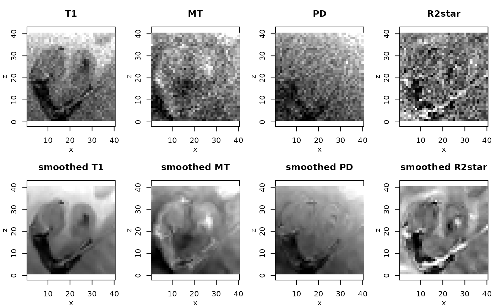
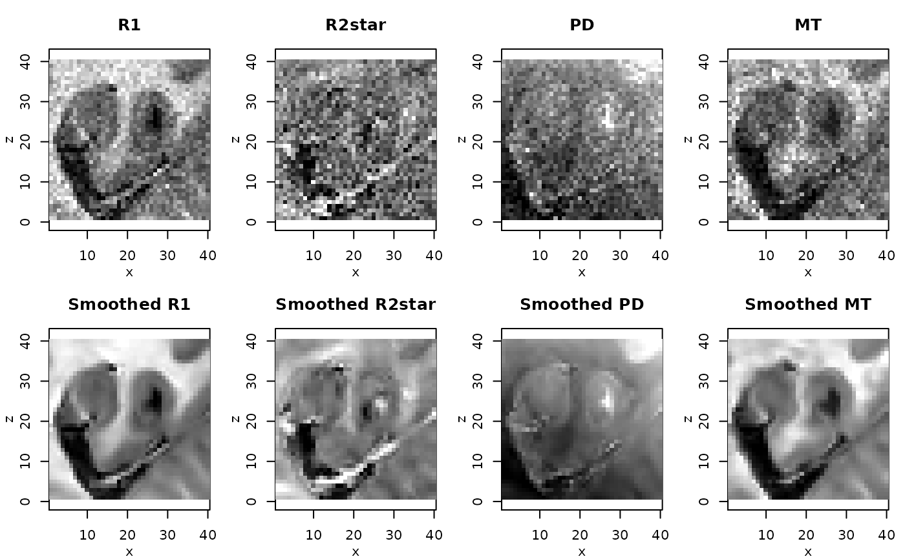

qMRI-package.RdImplementation of methods for estimation of quantitative maps from Multi-Parameter Mapping (MPM) acquisitions (Weiskopf et al. (2013) <doi:10.3389/fnins.2013.00095>) including adaptive smoothing methods in the framework of the ESTATICS model (Estimating the apparent transverse relaxation time (R2*) from images with different contrasts, Weiskopf et al. (2014) <doi:10.3389/fnins.2014.00278>). The smoothing method is described in Mohammadi et al. (2017). <doi:10.20347/WIAS.PREPRINT.2432>. Usage of the package is also described in Polzehl and Tabelow (2019), Magnetic Resonance Brain Imaging, Chapter 6, Springer, Use R! Series. <doi:10.1007/978-3-030-29184-6_6>.
The DESCRIPTION file:
This package was not yet installed at build time.
Index: This package was not yet installed at build time.
Karsten Tabelow tabelow@wias-berlin.de
J\"org Polzehl polzehl@wias-berlin.de
Maintainer: Karsten Tabelow <karsten.tabelow@wias-berlin.de>
Weiskopf, N.; Suckling, J.; Williams, G.; Correia, M. M.; Inkster, B.; Tait, R.; Ooi, C.; Bullmore, E. T. & Lutti, A. Quantitative multi-parameter mapping of R1, PD(*), MT, and R2(*) at 3T: a multi-center validation. Front Neurosci, Wellcome Trust Centre for Neuroimaging, UCL Institute of Neurology, University College London, UK., 2013, 7, 95
J. Polzehl, K. Tabelow (2019). Magnetic Resonance Brain Imaging: Modeling and Data Analysis Using R. Springer, Use R! series. Doi:10.1007/978-3-030-29184-6.
# \donttest{
dataDir <- system.file("extdata",package="qMRI")
#
# set file names for T1w, MTw and PDw images
#
t1Names <- paste0("t1w_",1:8,".nii.gz")
mtNames <- paste0("mtw_",1:6,".nii.gz")
pdNames <- paste0("pdw_",1:8,".nii.gz")
t1Files <- file.path(dataDir, t1Names)
mtFiles <- file.path(dataDir, mtNames)
pdFiles <- file.path(dataDir, pdNames)
#
# file names of mask and B1 field map
#
B1File <- file.path(dataDir, "B1map.nii.gz")
maskFile <- file.path(dataDir, "mask.nii.gz")
#
# Acquisition parameters (TE, TR, Flip Angle) for T1w, MTw and PDw images
#
TE <- c(2.3, 4.6, 6.9, 9.2, 11.5, 13.8, 16.1, 18.4,
2.3, 4.6, 6.9, 9.2, 11.5, 13.8,
2.3, 4.6, 6.9, 9.2, 11.5, 13.8, 16.1, 18.4)
TR <- rep(25, 22)
FA <- c(rep(21, 8), rep(6, 6), rep(6, 8))
#
# read MPM example data
#
library(qMRI)
mpm <- readMPMData(t1Files, pdFiles, mtFiles,
maskFile, TR = TR, TE = TE,
FA = FA, verbose = FALSE)
#
# Estimate Parameters in the ESTATICS model
#
modelMPM <- estimateESTATICS(mpm, method = "NLR")
#> Design of the model:
#> [,1] [,2] [,3] [,4]
#> [1,] 1 0 0 0.023
#> [2,] 1 0 0 0.046
#> [3,] 1 0 0 0.069
#> [4,] 1 0 0 0.092
#> [5,] 1 0 0 0.115
#> [6,] 1 0 0 0.138
#> [7,] 1 0 0 0.161
#> [8,] 1 0 0 0.184
#> [9,] 0 1 0 0.023
#> [10,] 0 1 0 0.046
#> [11,] 0 1 0 0.069
#> [12,] 0 1 0 0.092
#> [13,] 0 1 0 0.115
#> [14,] 0 1 0 0.138
#> [15,] 0 0 1 0.023
#> [16,] 0 0 1 0.046
#> [17,] 0 0 1 0.069
#> [18,] 0 0 1 0.092
#> [19,] 0 0 1 0.115
#> [20,] 0 0 1 0.138
#> [21,] 0 0 1 0.161
#> [22,] 0 0 1 0.184
#> done
#> Start estimation in 11200 voxel at 2021-05-17 15:22:26
#>
|
| | 0%
|
|====== | 9%
|
|============ | 18%
|
|=================== | 27%
|
|========================= | 36%
|
|=============================== | 45%
|
|====================================== | 54%
|
|============================================ | 62%
|
|================================================== | 71%
|
|======================================================== | 80%
|
|============================================================== | 89%
|
|===================================================================== | 98%
#> Finished estimation 2021-05-17 15:22:46
#
# smooth maps of ESTATICS Parameters
#
setCores(2)
#> Total CPU cores available: 2 CPU cores in use: 2.
modelMPMsp1 <- smoothESTATICS(modelMPM,
kstar = 16,
alpha = 0.004,
patchsize=1,
verbose = TRUE)
#> using lambda= 125.0501 patchsize= 1
#> Progress:step 1 hakt 1.010096 time 2021-05-17 15:22:46
#> 0.72% mean(bi) 1.11 step 2 hakt 1.022114 time 2021-05-17 15:22:46
#> 1.6% mean(bi) 1.19 step 3 hakt 1.036736 time 2021-05-17 15:22:46
#> 2.8% mean(bi) 1.31 step 4 hakt 1.055091 time 2021-05-17 15:22:46
#> 4.2% mean(bi) 1.46 step 5 hakt 1.079247 time 2021-05-17 15:22:46
#> 5.9% mean(bi) 1.66 step 6 hakt 1.113579 time 2021-05-17 15:22:47
#> 8.2% mean(bi) 1.91 step 7 hakt 1.169869 time 2021-05-17 15:22:47
#> 11% mean(bi) 2.28 step 8 hakt 1.301844 time 2021-05-17 15:22:47
#> 14% mean(bi) 2.96 step 9 hakt 1.432987 time 2021-05-17 15:22:47
#> 19% mean(bi) 3.62 step 10 hakt 1.46909 time 2021-05-17 15:22:47
#> 24% mean(bi) 4.03 step 11 hakt 1.523812 time 2021-05-17 15:22:47
#> 31% mean(bi) 4.62 step 12 hakt 1.627073 time 2021-05-17 15:22:47
#> 39% mean(bi) 5.54 step 13 hakt 1.781336 time 2021-05-17 15:22:48
#> 50% mean(bi) 6.7 step 14 hakt 1.97111 time 2021-05-17 15:22:48
#> 63% mean(bi) 7.99 step 15 hakt 2.236947 time 2021-05-17 15:22:48
#> 79% mean(bi) 9.43 step 16 hakt 2.333957 time 2021-05-17 15:22:48
#> 100% mean(bi) 9.88
#
# resulting ESTATICS parameter maps for central coronal slice
#
if(require(adimpro)){
rimage.options(zquantiles=c(.01,.99), ylab="z")
oldpar <- par(mfrow=c(2,4),mar=c(3,3,3,1),mgp=c(2,1,0))
pnames <- c("T1","MT","PD","R2star")
modelCoeff <- extract(modelMPM,"modelCoeff")
for(i in 1:4){
rimage(modelCoeff[i,,11,])
title(pnames[i])
}
modelCoeff <- extract(modelMPMsp1,"modelCoeff")
for(i in 1:4){
rimage(modelCoeff[i,,11,])
title(paste("smoothed",pnames[i]))
}
}

#
# Compute quantitative maps (R1, R2star, PD, MT)
#
qMRIMaps <- calculateQI(modelMPM,
b1File = B1File,
TR2 = 3.4)
#> reading B1 correction file
#> calculating R1 ... Spoiling correction ... v3* 0.8mm R4 protocol
#> Spoiling correction ... v3* 0.8mm R4 protocol
#> done
#> calculating PD ... done
#> calculating MT ... done
qMRISmoothedp1Maps <- calculateQI(modelMPMsp1,
b1File = B1File,
TR2 = 3.4)
#> reading B1 correction file
#> calculating R1 ... Spoiling correction ... v3* 0.8mm R4 protocol
#> Spoiling correction ... v3* 0.8mm R4 protocol
#> done
#> calculating PD ... done
#> calculating MT ... done
#
# resulting quantitative maps for central coronal slice
#
if(require(adimpro)){
rimage.options(zquantiles=c(.01,.99), ylab="z")
par(mfrow=c(2,4),mar=c(3,3,3,1),mgp=c(2,1,0))
nmaps <- c("R1","R2star","PD","MT")
qmap <- extract(qMRIMaps,nmaps)
for (i in 1:4) rimage(qmap[[i]][,11,],main=nmaps[i])
qmap <- extract(qMRISmoothedp1Maps,nmaps)
for (i in 1:4) rimage(qmap[[i]][,11,],main=paste("Smoothed",nmaps[i]))
}

par(oldpar)
# }